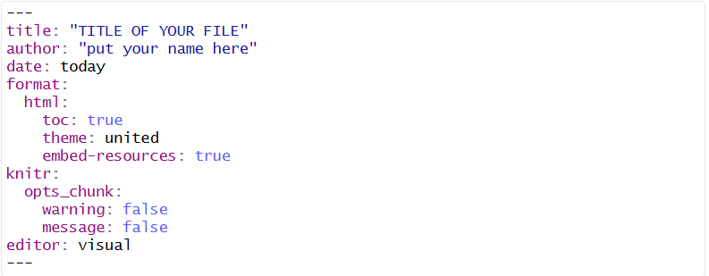

5 Basic Introduction to R
This portion of the book offers an introduction to the basics of R. R offers a wide variety of functionality. Note that this book only offers basic Econometric analysis. It will be useful to have some basic familiarity with R and its syntax but this is not strictly necessary.
Each chapter includes both R code and results to make it easier for students to follow along, even without detailed knowledge of R.
5.1 Session Information
This version of the book was built using R version 4.4.2. See below for the session information:
## R version 4.5.2 (2025-10-31 ucrt)
## Platform: x86_64-w64-mingw32/x64
## Running under: Windows 11 x64 (build 26200)
##
## Matrix products: default
## LAPACK version 3.12.1
##
## locale:
## [1] LC_COLLATE=English_Netherlands.utf8 LC_CTYPE=English_Netherlands.utf8
## [3] LC_MONETARY=English_Netherlands.utf8 LC_NUMERIC=C
## [5] LC_TIME=English_Netherlands.utf8
##
## time zone: Asia/Manila
## tzcode source: internal
##
## attached base packages:
## [1] stats graphics grDevices utils datasets methods base
##
## other attached packages:
## [1] lubridate_1.9.4 forcats_1.0.1 stringr_1.6.0 dplyr_1.1.4 purrr_1.2.0
## [6] readr_2.1.6 tidyr_1.3.2 tibble_3.3.0 ggplot2_4.0.1 tidyverse_2.0.0
## [11] readxl_1.4.5
##
## loaded via a namespace (and not attached):
## [1] jsonlite_2.0.0 gtable_0.3.6 crayon_1.5.3 compiler_4.5.2
## [5] tidyselect_1.2.1 jquerylib_0.1.4 scales_1.4.0 yaml_2.3.12
## [9] fastmap_1.2.0 R6_2.6.1 labeling_0.4.3 generics_0.1.4
## [13] knitr_1.51 bookdown_0.46 bslib_0.9.0 pillar_1.11.1
## [17] RColorBrewer_1.1-3 tzdb_0.5.0 rlang_1.1.6 cachem_1.1.0
## [21] stringi_1.8.7 xfun_0.55 sass_0.4.10 S7_0.2.1
## [25] timechange_0.3.0 cli_3.6.5 withr_3.0.2 magrittr_2.0.4
## [29] digest_0.6.39 grid_4.5.2 rstudioapi_0.17.1 hms_1.1.4
## [33] lifecycle_1.0.4 vctrs_0.6.5 evaluate_1.0.5 glue_1.8.0
## [37] farver_2.1.2 cellranger_1.1.0 rmarkdown_2.30 tools_4.5.2
## [41] pkgconfig_2.0.3 htmltools_0.5.95.2 Preliminaries
The first step is to gain access to R, which is free and available on the R website: http://cran.r-project.org/. Simply go to the R website, select the appropriate location and operating system, and follow the instructions to download the base distribution of R. RStudio offers a user friendly environment to run R and is recommended.

Once R is opened, we can begin to run commands. R commands can be run directly from the console, from the R script editor or from a text editor separate from R.
5.2.1 Understanding the RStudio Screen
Console (Bottom Left)
This is where you see the output from your code
Error messages
Warnings
You can type R commands directly in the console after the
>and press Enter to run them.Try it!
Type 3*9
Use the console for:
Quick calculations
Testing commands
Seeing results
Important! Anything types only in the console is not saved.
Script/Editor Area (Top Left)
The Script area is where you write and save your code or Quarto documents.
This is where R scripts and qmd files are written.
Code here is saved, reproducible, and reusable.
To run code from the script:
Select a line and press Ctrl+Enter (Windows) or Cmd+Enter (Mac) or just place the cursor beside the line to run it.
Run a whole chunk in Quarto
Rule: Always write code in the script/editor, not in the console.
Environment (Top Right)
The Environment shows all objects currently in memory such as data frames, variables, functions, models.
Try this: type
jmn<-1101in the console. After running this,jmnwill appear in the Environment.If something does NOT appear, it does not exist in your session.
Files, Plots, Packages, Help, Viewer (Bottom Right)
This panel has multiple tabs:
Files
Shows files in your working directory. Your working directory can be seen just below the Console, the one after
~Use this to navigate project files
Plots
- Displays graphs created by code
Packages
Shows list of installed packages.
Checkboxes allow loading/unloading packages but you still need to add in the code
library()in scripts for reproducibility.
Help
- Displays help pages
Viewer
Shows rendered HTML outputs
Used when previewing Quarto documents
R offers detailed help files for each function. To access help, run:
All lines proceeded by a # are comments and will not run*. For example:
5.3 Packages
Each package of interest must be installed and loaded before it can be used. The packages will not be immediately available when R is opened. A package only has to be installed once on a computer, but the package will have to be loaded every time R is restarted.
We can install a package individually as we need them. For example, to install tidyverse and psych, we would do:
In the tidyverse package, the ggplot2 is usually included; if you do not see the package in the Packages list at the lower right, you can do this:
Now that we have our packages successfully installed, we can go ahead and load them into R. Here we will load the tidyverse package as an example. We can use of all the functions available in that package once it is loaded into R. We load packages by using a library() function. The input is the name of the package, not in quotes.
We can look up all of the functions within a package by using a help() function. For example, let’s look at the functions available in the tidyverse package.
Note that the package argument is necessary to look up all of the functions. We can also detach a package if we no longer want it loaded. This is sometimes useful if two packages do not play well together. Here we will use a detach() function.
For simplicity, we will assume that the reader has restarted R at the beginning of each tutorial.
5.4 Setting up the Working Directory
MOST IMPORTANT!
If your working directory is incorrect, R will not find your files and your code will fail even if it is correct.
5.4.1 What is a Working Directory?
The working directory is the folder where R looks for data files, saves outputs, where .qmd files should be placed.
You will only use one main local folder as your working directory (technically two: one in your laptop, one in your university account computer)
5.4.2 Required Folder Structure
Create a folder: DLSU_COURSE_SECTION
This folder is your local working directory.
On university computers: create this folder inside your university account storage.
On your personal computer: create this folder anywhere convenient for you.
All qmd files must be placed inside this folder!
5.4.3 Setting the Working Directory in RStudio
This method works on both Windows and Mac and avoids typing errors.
- Open RStudio
- Go to Session>Set Working Directory>Choose Working Directory
- Select the folder
DLSU_COURSE_Section - Click Open
Once set, R will treat this folder as the default location for all files; meaning, all files in the course should be placed in this folder. Download files then place in this folder.
5.4.4 Setting the Working Directory Using Code
This is a hassle as you will manually code working directory using setwd()
Windows:
# Use double backslashes \\ or forward slashes /
setwd("C:\\Users\\YourUsername\\Documents\\DLSU_COURSE_Section")
setwd("C:/Users/YourUsername/Documents/DLSU_COURSE_Section")Mac:
How to get the path? I forgot! Just kidding. I just right-click on the file and copy as path name. I am not sure how it is with Mac, I think same, right click but press option so the path name will show up.
To confirm your working directory:
If the printed path is NOT DLSU_COURSE_Section, fix it.
5.5 Cleaning the Environment (Do This Regularly)
You should clean your environment at the start of a new lecture, when switching datasets, or when something behaves unexpectedly.
# Remove all objects from the environment
rm(list = ls())
# Free up memory (makes processor faster)
gc()The Environment panel should be empty. You are always starting with a clean session.
5.6 Quarto Markdown
In this course, Quarto Markdown (.qmd files). Quarto Markdown is a tool for creating documents, reports and presentations using Markdown and executable code.
5.6.1 Installing Quarto in R
Before starting, install the quarto R package if not already installed:
5.6.2 Starting a Quarto Document
To begin creating a Quarto document, follow these steps:
Open RStudio.
Go to File > New File > Quarto Document.
Choose the document type (e.g., HTML, PDF, Word, etc.) and specify whether the document will include code. For ease, we will use the html document type. Use the visual editor for ease of editing.
5.6.3 YAML Header Use
Here is the YAML header for all quarto documents that you will submit along with line-by-line explanations.
title: “TITLE of the FILE”
This contains the title of the document. It appears at the top and in the browser tab.
author: “put your name here”
Replace with your name. Identifies the document author.
date: today
Automatically inserts the current date.
format:
html:
toc: true
theme: united
embed-resources: true
Format specifies the output type (html in this case), adds a table of contents, sets a bootstrap html theme (you can use other themes but this is preferred), embeds all resources in the html file.
knitr:
opts_chunk:
warning: false
message: false
Controls code chunk behavior, meaning, it hides warnings and hides messages when rendering.
editor: visual
Uses the visual editor in Rstudio for the output
Marks the end of the YAML header.
As a whole, the YAML header looks like this:

5.6.4 Quarto Key Features
Code Chunks
Code chunks allow you to include and run code inside your document. To make code chunks, long way (there is shortcut later). Type ```{r} then press Enter. If you want to run the specific code chunk, you can also press the green play button at the right side of the chunk. If you want to run previous code chunks, press the button that has an arrow down with a green line below, just beside the green play button.
Inline Code
Embed R code in text using backticks and r .
Try typing this:
The total number of pairs is “r 15+12”. Replace the quotation marks with backticks. When you render the file, what should come out in place of the backticks thing would be the number 27.
5.6.5 Quarto Markdown Shortcuts
| Action | Windows Shortcut | Mac Shortcut |
|---|---|---|
| Insert a new code chunk | Ctrl+Alt+I | Cmd+Option+I |
| Run current code chunk | Ctrl+Shift+Enter | Cmd+Shift+Enter |
| Run all code chunks | Ctrl+Alt+R | Cmd+Alt+R |
| Run current line/selection | Ctrl+Enter | Cmd+Enter |
| Knit/Render document | Ctrl+Shift+K | Cmd+Shift+K |
| Comment/uncomment lines | Ctrl+Shift+C | Cmd+Shift+C |
| Insert pipe (%>%) | Ctrl+Shift+M | Cmd+Shift+M |
| Headings | /H Number of Heading (if in Visual mode) Prefix line with #, ##, etc. manually (in Source mode) |
/H Number of Heading (if in Visual mode) Prefix line with #, ##, etc. manually (in Source mode) |
| Bold | Ctrl+B | Cmd+B |
| Italic | Ctrl+I | Cmd+I |
| Inline code | Surround with backticks (’) manually | Surround with backticks (’) manually |
5.7 Working Directories and File Management
You will always work locally first. Each student must:
Edit .qmd files only inside their local
DLSU_COURSE_Sectionfolder.Render HTML files locally to check for errors
Never edit files directly inside Google Drive via a browser
5.8 Mini-Exercise: First Quarto Render (Mandatory per Individual)
This exercise checks that you can write, run, and render a Quarto document correctly.
Instructions:
- Create a new Quarto HTML document in RStudio.
- Keep the YAML header exactly as shown earlier in this chapter.
- In the body of the document, do the following steps:
a. Add a Section Header
Below the YAML header, add the following Markdown header:
About Me as Heading 1
Under this header, write 2-3 sentences introducing yourself (name, program, year, hobbies)
b. Add Inline Code for your age
In the same section, add a sentence that includes inline R code.
Sentence: I am “r 2026-type your year of birth” years old.
Do NOT calculate your age manually. The age must be computed by R. The number should appear as plain text in the sentence.
c. Add a Code Chunk
Insert a new R code chunk.
Inside the chunk:
Add a comment saying this is just a test
Create an object named after your initials
Add the alphabetical positions of your initials
Print the result
Example:
## [1] 37d. Render the document
This exercise will help you in future lectures!
e. Create a new Quarto document
Clean the environment and free up the memory.
Don’t forget your YAML header before the code chunk including the cleaning and freeing the memory!